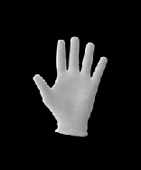

안녕하세요! 저는 현재 산업디자인학과 대학원에 있으며, 웹에 대한 지식이 앞으로의 연구에 도움이 될 것 같다는 생각에 정말 갓 시작해요.
제 취미는.. 누워있기인데.. '_'. 근데 최근에 복싱도 갓 시작했습니다. 지금까진 누워서 멍하게 있는 것도 좋고 복싱도 재미있습니다.
정말 갓 시작해서요..! 인턴 생활 중에 웹에 대한 공부를 해야겠다는 생각이 들었는데, 추진력이 살짝 부족해서 항상 오픈튜토리얼스의 강의를 intro만 2-3번 들은 것 같아요. 앞으로 이 활동이 저에게 좋은 자극이 되어 꾸준히 배우고, 스스로 배우려는 연습에 도움이 되었으면 좋겠습니다!